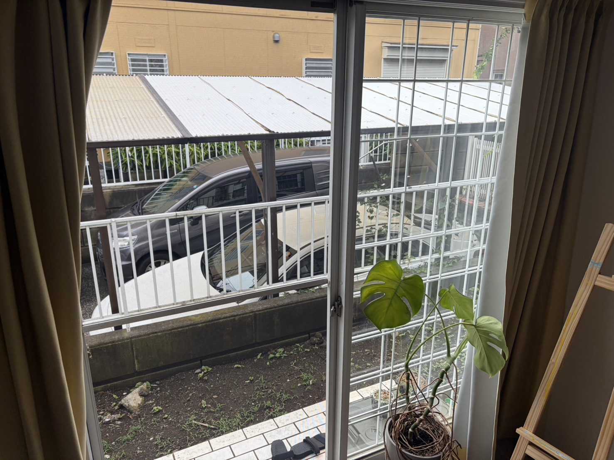
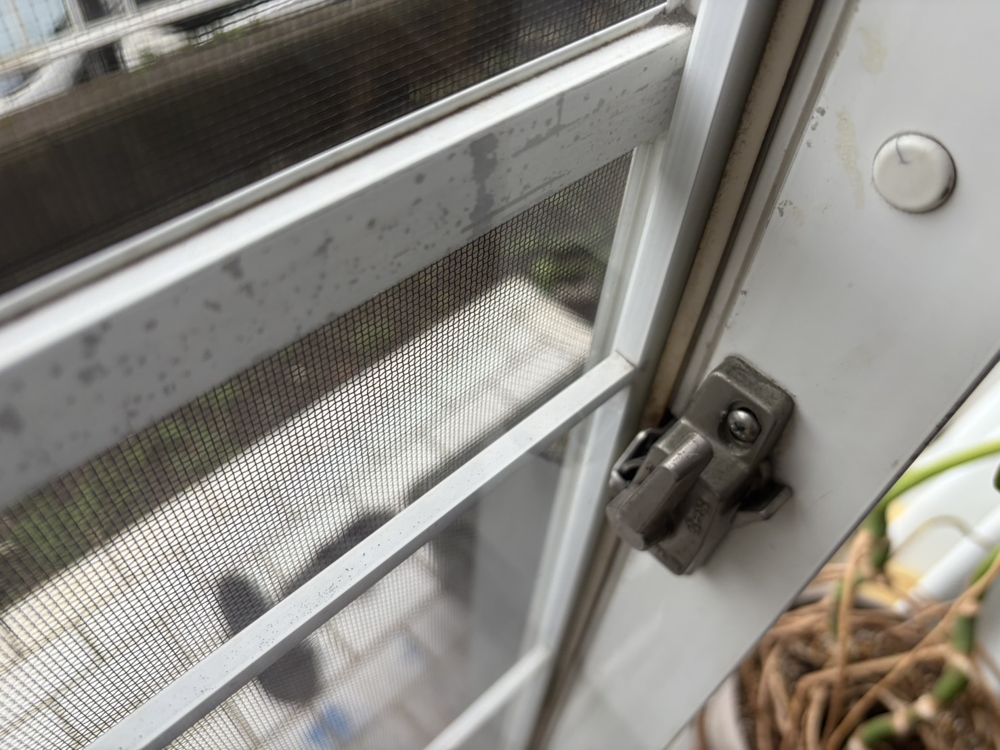

作業実績 / 窓まわり
窓サッシの戸車調整・潤滑油の注入・建付け調整を行いました
今回は、窓まわりの調整を行った現場をご紹介します。担当した作業は、戸車調整、潤滑油の注入、建付け調整の3点です。住まいの相談というと設備の交換を思い浮かべるかもしれませんが、今回のような調整作業も行っています。

今回行った3つの作業
この現場では、戸車の調整に加え、潤滑油の注入と建付けの調整を行いました。「窓の調整」と一言でまとめず、何を担当したかが分かるように、今回の実績では作業内容を分けてご紹介しています。
窓まわりのことでご相談いただくときも、最初から必要な作業名を知っている必要はありません。「戸車調整を頼むべきか」「建付けを見てもらうべきか」と決めてから連絡せず、気になっていることをそのままお知らせください。
窓全体と、手元の様子を写真で紹介
掲載しているのは、窓全体が分かる写真と、留め具まわりを近くから撮った写真の2枚です。今回の作業場所をお伝えする現場写真としてご覧ください。施工前後を比較した写真ではありません。

写真だけでは、開閉時の手応えや音までは伝わりません。そのため、ご自宅の相談では写真に短い説明を添えていただけると助かります。例えば「開け始めに気になる」「閉めるときに違和感がある」など、普段使っていて感じることをお聞かせください。これらは相談内容の例で、今回の現場の症状を示すものではありません。
小さな違和感も、まずは相談から
毎日使う窓だからこそ、少し気になることがあっても「これくらいで頼んでよいのかな」と迷うことがあります。そんなときは、どの窓の、どんな場面で気になるのかを教えてください。原因や作業方法を、ご自身で判断しておく必要はありません。
今回と同じ作業で対応できるかは、ご自宅の状態を確認してからのご案内になります。行徳・妙典周辺で住まいの困りごとがある方は、写真と大まかな地域をLINEでお送りください。LINE写真相談は0円です。対応できる範囲を確認し、作業前に金額をご案内します。
ほかの工事・作業実績や料金目安も掲載しています。